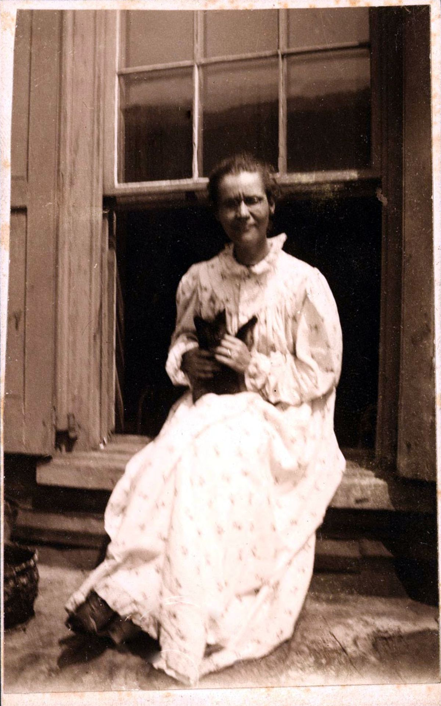

Contexte
Voltairine de Cleyre écrit ce texte autobiographique au début des années 1900. Il est repris en 1914, deux ans après sa mort, dans le recueil de ses œuvres choisies édité par Alexander Berkman. Elle y raconte sa jeunesse dans un pensionnat catholique du Canada où son père l'avait placée, ses débuts de conférencière libre-penseuse, puis son chemin vers l'anarchisme.

La thèse
L'anarchisme ne s'apprend pas d'un coup : il prolonge un tempérament rebelle et une longue quête de liberté. Et l'idée centrale qu'elle en tire : la liberté fonde l'ordre, et non l'inverse.
Les idées, dans l'ordre
- Une révolte précoce contre une éducation religieuse stricte : elle tente de s'enfuir du couvent à pied.
- Le choc de Chicago. La pendaison de quatre anarchistes en 1887, après un procès truqué, ruine sa confiance dans la justice. Elle les avait d'abord crus coupables.
- La liberté comme fondement de l'ordre social, et non comme une menace pour lui.
- Un « anarchisme sans adjectif ». Entre individualistes et communistes, elle refuse de trancher : laissons l'expérience décider quelle forme économique convient.
- Les ouvriers juifs immigrés de Philadelphie, à qui elle enseigne l'anglais, l'impressionnent par leur soif de savoir et leur dévouement.
- Résister, toute sa vie, sans jamais se soumettre.
Débats et limites
- Un texte court, qui laisse de côté bien des épisodes de sa vie : la pauvreté, la maladie, l'attentat dont elle a été victime.
Et aujourd'hui ?
L'« anarchisme sans adjectif » qu'elle défendait reste une attitude précieuse : plutôt que de se déchirer sur des étiquettes, juger les formes d'organisation à l'usage. Son récit montre aussi comment un engagement naît : d'une injustice vécue de près, et de rencontres.
À retenir
- Un engagement d'abord intime.
- Un « anarchisme sans adjectif ».
- Voir aussi De l'action directe.
Sources et pour aller plus loin
Le texte original
- « La Fabrication d'une anarchiste » sur la Bibliothèque anarchiste : le texte intégral, aussi en PDF et en livre numérique (EPUB).
Lire
- D'espoir et de raison, Voltairine de Cleyre, Lux, 2008.L'anthologie en français.
- Le 1er MaiNotre fiche : l'histoire des martyrs de Chicago, qui l'ont fait basculer.
Sur le web
- Voltairine de Cleyre sur WikipédiaSa vie complète.
Fiche de lecture rédigée par la bande à Mamie d'après les textes de la Bibliothèque anarchiste francophone. Cette fiche est libre de reproduction.
À lire aussi · Individu & morale
- L'Anarchie et l'ÉgliseCombattre sans relâche le pouvoir des Églises, sans haine pour les croyantes et les croyants, et protéger les enfants de toute fabrique d'obéissance.
- À propos du végétarismeTuer pour manger endurcit : le végétarisme comme choix moral de solidarité avec les animaux, sans dogme.
- La Grande FamilleLe progrès a coûté notre alliance avec les animaux : retrouver avec eux une relation de compagnie plutôt que de domination.